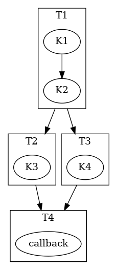
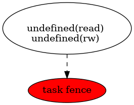
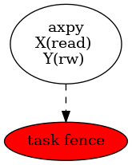
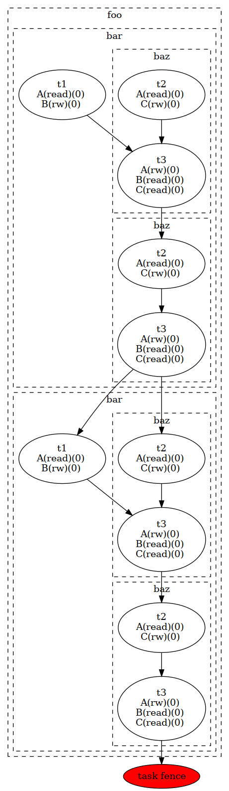
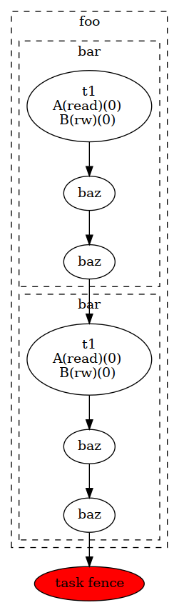
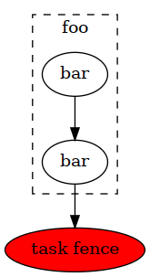
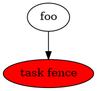
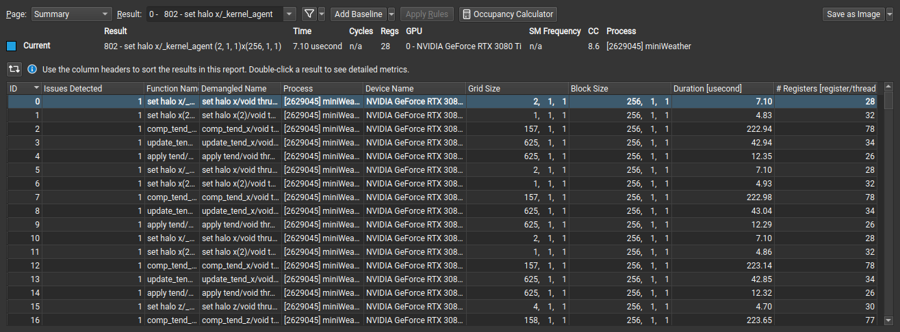

CUDASTF#
CUDASTF is an implementation of the Sequential Task Flow model for CUDA.
The availability of parallelism within modern hardware has dramatically increased, with large nodes now featuring multiple accelerators. As a result, maximizing concurrency at the application level in a scalable manner has become a crucial priority. To effectively hide latencies, it is essential to achieve the highest level of asynchrony possible.
CUDASTF introduces a tasking model that automates data transfers while enforcing implicit data-driven dependencies.
Implemented as a header-only C++ library, CUDASTF builds on top of CUDA APIs to simplify the development of multi-GPU applications.
CUDASTF enables the creation of highly concurrent parallel applications, leveraging both the CUDA stream API and the CUDA graph API for efficient task orchestration and data management. The same client code can run optimally on single- and multi-GPU systems.
The Sequential Task Flow (STF) programming model#
The CUDASTF programming model involves defining logical data and submitting tasks that operate on this data. CUDASTF automatically deduces the dependencies between different tasks and orchestrates both computation and data movement to ensure efficient execution with as much concurrency as possible.
CUDASTF employs the Sequential Task Flow (STF) programming model, which enables the extraction of concurrency from a sequence of tasks annotated with appropriate data accesses and their respective modes (read-only, write-only, or read/write).
For instance, two tasks modifying the same data will be serialized (in order to maintain read-after-write and write-after-write coherency), whereas two tasks reading the same data without modification can be executed concurrently (read-after-read is coherent in any order). A task must wait until all preceding modifications have been completed before reading a piece of data (read-after-write). Similarly, a task that needs to modify data can only do so once all preceding reads have finished (write-after-read).
Applying these simple rules to a complex algorithm (initially expressed serially as a sequence of tasks) results in a directed acyclic graph (DAG) of tasks, which enables CUDASTF to devise concurrent execution for the given algorithm.
By providing data use annotations to CUDASTF, programmers benefit from both automated parallelization and transparent data management. Through a specialized cache coherency protocol, CUDASTF automates data allocation and transfers. As a result, programmers can focus on developing efficient task-based algorithms instead of grappling with asynchrony and asynchronous data management.
To illustrate how a sequence of tasks can be transformed into a parallel
application using annotated data accesses, consider the following
example involving three logical data pieces denoted as X, Y,
and Z:
T1[X(rw)], T2[X(read), Y(rw)], T3[X(read), Z(rw)], T4[Y(read), Z(rw)]
T2 and T3 read X, which is modified by T1, creating a
read-after-write dependency between T1 and T2, as well as
between T1 and T3. Since T2 and T3 only perform
concurrent read accesses, they can execute concurrently. T4 reads
Y and Z, which were modified by T2 and T3, respectively,
resulting in write-after-read dependencies between T2 and T4,
and between T3 and T4. The resulting dependency graph is shown
below.
Getting started with CUDASTF#
Getting CUDASTF#
CUDASTF is part of the CUDA Experimental library of the CCCL project. It is not distributed with the CUDA Toolkit like the rest of CCCL. It is only available on the CCCL GitHub repository.
Using CUDASTF#
CUDASTF is a header-only C++ library which only require to include its
main header. CUDASTF API is part of the cuda::experimental::stf C++
namespace, and we will assume for brevity that we are using this
workspace in the rest of this document.
#include <cuda/experimental/stf.cuh>
using cuda::experimental::stf;
Compiling#
CUDASTF requires a compiler conforming to the C++17 standard or later. Although there is no need to link against CUDASTF itself, the library internally utilizes the CUDA library.
# Compilation flags
nvcc -std=c++17 --expt-relaxed-constexpr --extended-lambda -I$(cudastf_path)
# Linking flags
nvcc -lcuda
It is also possible to use CUDASTF without nvcc. This is for example
useful when calling existing CUDA libraries such as CUBLAS which do not
require authoring custom kernels. Note that CUDASTF APIs intended to
automatically generate CUDA kernels such as parallel_for or
launch are disabled when compiling without nvcc.
# Compilation flags
g++ -I$(cudastf_path)
# Linking flags
g++ -lcuda -lcudart
Using CUDASTF within a CMake project#
As part of the CCCL project, CUDASTF uses CMake for its build and installation infrastructure, and is the recommended way of building applications that use CUDASTF.
This is facilitated by the CMake Package Manager as illustrated in this simple example which is available here, and which is described in the next paragraph.
A simple example#
The following example illustrates the use of CUDASTF to implement the
well-known AXPY kernel, which computes Y = Y + alpha * X where X
and Y are two vectors, and alpha is a scalar_view value.
#include <cuda/experimental/stf.cuh>
using namespace cuda::experimental::stf;
template <typename T>
__global__ void axpy(T a, slice<T> x, slice<T> y) {
int tid = blockIdx.x * blockDim.x + threadIdx.x;
int nthreads = gridDim.x * blockDim.x;
for (int ind = tid; ind < x.size(); ind += nthreads) {
y(ind) += a * x(ind);
}
}
int main(int argc, char** argv) {
context ctx;
const size_t N = 16;
double X[N], Y[N];
for (size_t ind = 0; ind < N; ind++) {
X[ind] = sin((double)ind);
Y[ind] = col((double)ind);
}
auto lX = ctx.logical_data(X);
auto lY = ctx.logical_data(Y);
double alpha = 3.14;
/* Compute Y = Y + alpha X */
ctx.task(lX.read(), lY.rw())->*[&](cudaStream_t s, auto sX, auto sY) {
axpy<<<16, 128, 0, s>>>(alpha, sX, sY);
};
ctx.finalize();
}
The code is organized into several steps, which will be described in more detail in the following sections:
include CUDASTF headers
declare a CUDASTF context
create logical data
submit and wait for the completion of pending work
More examples can be found in the examples directory in the sources.
Compiling examples#
The following commands compile STF examples from the root of the CCCL sources.
Please note the -j option, which specifies how many processes should be used to
compile the examples. Not specifying it will launch as many processes as there
are processors on the machine, which might lead to an excessive resource
consumption and system instability.
mkdir -p build
cd build
cmake .. --preset cudax
cd cudax
ninja cudax.examples.stf -j4
To launch examples, simply run binaries under the bin/ subdirectory in the current directory. For instance, to launch the 01-axpy example:
./bin/cudax.cpp17.example.stf.01-axpy
Backends and contexts#
The code snippet below includes the required CUDASTF header. It then
creates a context object, which is an entry point for every API calls,
and which stores the state of the CUDASTF library and to keep track of
all resources and all dependencies. This context must eventually be
destroyed using the finalize() method.
context ctx;
There are currently three context backends available in CUDASTF, with a
common API but possibly different implementations, and a few specific
extensions. The context class, which is a generic context
implementation should be preferred to write generic code. Using a
specific context type might reduce compilation time, but provide less
flexibility.
The stream_ctx class defines a context type that relies on CUDA
streams and CUDA events to implement synchronizations. Tasks are
launched eagerly. This is the context type used by default in the
generic context type.
The graph_ctx class is a context type that implements task
parallelism by the means of CUDA graphs. Tasks (and all related
operations) are put into CUDA graphs. Note that the lambda function
attached describing a task is captured immediately (during the
ctx.task API call) even if the execution is deferred. The underlying
CUDA graph is launched when a synchronization with the host is needed,
or when the context is finalized. Other circumstances such as task
fences might flush all pending operations and result into a graph
launch. Subsequent operations would be put in a new CUDA graph.
Selecting this backend is an easy way to adopt CUDA graphs, and can be
beneficial in terms of performance with a repeated task patterns. Unlike
other context types, it is not allowed for a task to synchronize with
the CUDA stream (e.g. with cudaStreamSynchronize) within a task.
Using either context, stream_ctx, or graph_ctx should result
in the same behaviour, even if the underlying implementation differs.
One may switch from a type to another one by adapting how we initialize
the context object, or by selecting an appropriate type to decide
statically:
// assigns a graph_ctx() to a generic context
context ctx = graph_ctx();
// statically select a context based on CUDA streams and CUDA events
stream_ctx ctx;
// statically select a context based on CUDA streams and CUDA events
graph_ctx ctx;
For the most part, these types can be used interchangeably. The key
difference is that stream_ctx and graph_ctx are statically bound to
use either the CUDA stream or graph APIs, while context defers this
decision to runtime, allowing dynamic selection of the appropriate backend.
This flexibility does not introduce significant runtime overhead or
compilation time differences, but it may be necessary when the user needs
to select the context type dynamically (see Algorithms).
Tasks in the Stream backend#
The stream_ctx backend utilizes CUDA streams and events to provide
synchronization. Each stream_task in the stream_ctx backend
represents a task that is associated with an input CUDA stream.
Asynchronous work can be submitted in the body of the task using this
input stream. Once the stream_task completes, all work submitted
within the task’s body is assumed to be synchronized with the associated
stream.
Users can query the stream associated to a stream_task using its
get_stream() method.
Tasks in the Graph backend#
In the graph_ctx environment, a CUDA graph is either created
internally or passed in by the user during construction. If the user
supplies the CUDA graph, CUDASTF can automatically insert CUDA graph
nodes to enable subsequent tasks to be submitted as child graphs of the
user-supplied graph.
Creating a graph_task object results in creating a child graph in the
aforementioned graph associated to the graph_ctx object. The child
graph implements the body of the task, and CUDASTF automatically inserts
the appropriate dependencies to ensure this child graph is executed only
after all of its dependencies are fulfilled. CUDASTF may also add other
nodes in the supporting CUDA graph, such as those needed for data
transfers or data allocations.
Users can retrieve the graph associated to a graph_task by using its
get_graph() method.
Logical data#
In traditional computing, “data”, such as a matrix describing a neural
network layer, typically refers to a location in memory with a defined
address. However, in mixed CPU/GPU systems, the same conceptual data may
exist simultaneously in multiple locations and have multiple addresses
(typically the CPU-tied RAM plus one or more copies in the
high-bandwidth memory used by GPUs). CUDASTF refers to such conceptual
data as logical data, an abstract handle for data that may get
transparently transferred to or replicated over the different places
used by CUDASTF tasks. When user code creates a logical data object from
a user-provided object (e.g. an array of double), they transfer the
ownership of the original data to CUDASTF. As a result, any access to
the original data should be performed through the logical data
interface, as CUDASTF may transfer the logical data to a CUDA device
where it can be modified, rendering the original data invalid. By doing
this, user code is relieved of all memory allocation chores and of
keeping track of which physical location holds the correct data at
different stages of computation.
A logical data is created by calling the ctx.logical_data member
function. The resulting object will be used to specify data accesses
within tasks.
In the following example, a stack array X is used to define a new
logical data object lX, which should be subsequently used instead of
X:
double X[N];
auto lX = ctx.logical_data(X);
Each logical data object internally maintains various data instances, which are replicas of the logical data at different data places. For instance, there could be an instance in host memory, as well as instances in the embedded memory of CUDA device 0 and CUDA device 1. CUDASTF ensures that tasks have access to valid data instances where they execute and may dynamically create new instances or destroy existing ones.
In the example above, X is initially on the host (on the CPU stack).
If a task is subsequently launched on device 0 that modifies data
through lX, a new data instance will be created in memory associated
with device 0. In addition making that allocation, CUDASTF ensures
that a data transfer is issued asynchronously from the host to the
device, so that the task is given a valid replica of X. Given that
the task modifies data through lX, the instance associated to the
host will also be invalidated, so CUDASTF will later copy data back to
the host if another task needs to access X from the CPU.
Data interfaces#
CUDASTF implements a generic interface to manipulate different types of data formats across the machine.
Every type of data format is described using three separate types :
its shape, which stores parameters which will be common to all instance. For a fixed-sized vector, the shape would for example contain the length of the vector.
a per-instance type that describes a specific data instance. For a fixed-sized vector, this type would for example contain the address of the vector.
a data interface class which implements operations such as allocating a data instance based on its shape, or copying an instance into another instance.
Defining custom data interfaces (advanced)#
CUDASTF API is designed to be extensible, so that advanced users may define their own data interfaces. This can be useful when manipulating data formats which are not regular multidimensional arrays, or to provide a direct access to a domain-specific or an application-specific data format.
A complete example is given here to illustrate how to implement a custom data interface.
Write-back policy#
When a logical data object is destroyed, the original data instance is
updated (unless the logical data was created without a reference value,
e.g. from a shape). The result is only guaranteed to be available on the
corresponding data place when after the finalize() method was called
on the context. Likewise, when calling finalize() a write-back
mechanism is automatically issued on all logical data associated to the
context if they were not already destroyed.
Write back is enabled by default, but it is possible to disable it for a
specific logical data by calling this method on a logical data :
set_write_back(bool flag). Enabling write-back on a logical data
which was defined from a shape and has no reference data instance will
result in an error.
Slices#
To facilitate the use of potentially non-contiguous multi-dimensional
arrays, we have introduced a C++ data structure class called slice.
A slice is a partial specialization of C++’s
std::mdspan (or std::experimental::mdspan depending on the C++ revision).
template <typename T, size_t dimensions = 1>
using slice = mdspan<T, dextents<size_t, dimensions>, layout_stride>;
When creating a logical_data from a C++ array, CUDASTF automatically
describes it as a slice instantiated with the scalar_view element type and
the dimensionality of the array. Here is an example with an 1D array of
double.
double A[128];
context ctx;
auto lA = ctx.logical_data(A);
Internally, all instances of A are described as slice<double, 1>
where double is the scalar_view element type, and 1 is the
dimensionality of the array. The default dimension corresponds to 1,
so slice<double> is equivalent with slice<double, 1>.
The mdspan facility provides a variety of
methods also
available to its alias slice:
T *data_handle()gives the address of the first elementoperator()so thatA(i)is thei-th element of a slice of dimension1, andA(i, j)is the element at coordinates(i, j)in a 2D slice.size_t size()returns the total number of elements in the slicesize_t extent(size_t dim)returns the size of a slice in a given dimension (run-time version)size_t stride(size_t dim)returns the distance in memory between two elements in a given dimension, expressed as a number of elements (run-time version)
Slices can be passed by value, copied, or moved. Copying a slice does not copy the underlying data. Slices can be passed as arguments to CUDA kernel. Example:
template <typename T>
__global__ void axpy(T a, slice<T> x, slice<T> y) {
int tid = blockIdx.x * blockDim.x + threadIdx.x;
int nthreads = gridDim.x * blockDim.x;
for (int ind = tid; ind < x.size(); ind += nthreads) {
y(ind) += a * x(ind);
}
}
Defining multidimensional slices#
Slices can be used on data with multiple dimensions, and possibly non-contiguous data.
For example, to define a 2D slice, we can use the make_slice method
which takes a base pointer, a tuple with all dimensions, and then the
strides. The number of stride values is equal to the number of
dimensions minus one. The i-th stride defines the number of elements in
memory between two successive elements along dimension i.
double A[5 * 2];
// contiguous 2D slice
slice<double, 2> s = make_slice(A, std::tuple { 5, 2 }, 5);
// non-contiguous 2D slice
slice<double, 2> s2 = make_slice(A, std::tuple { 4, 2 }, 5);
In the second example, s2 defines a non-contiguous 2D slice because
the stride is greater than the extent in the first dimension. We will
here skip an element between between s2(3, 0) (which is A[3])
and s2(0, 1) (which is A[5])
Similarly with 3D data, we need to define 2 strides and 3 extent values :
double A[5 * 3 * 40];
// contiguous 3D slice
slice<double, 3> s = make_slice(A, std::tuple { 5, 3, 40 }, 5, 5 * 3);
// non-contiguous 3D slice
slice<double, 3> s2 = make_slice(A, std::tuple { 4, 3, 40 }, 5, 5 * 3);
// non-contiguous 3D slice
slice<double, 3> s3 = make_slice(A, std::tuple { 5, 2, 40 }, 5, 5 * 3);
Such slices can also be used to create logical data :
double A[32 * 32];
// Contiguous 2D slice
auto lX = ctx.logical_data(make_slice(A, std::tuple { 32, 32 }, 32));
// Non-contiguous 2D slice
auto lX2 = ctx.logical_data(make_slice(A, std::tuple { 24, 32 }, 32));
Defining logical data from a shape#
Data interfaces supports data which are only described as a shape. For example, a user may want to define a vector of 10 integers, and later fill it with a task. In this case, there is no need to have a reference instance associated to that logical data because CUDASTF will automatically allocate an instance on its first usage.
auto lX = ctx.logical_data(shape_of<slice<int>>(10));
ctx.task(lX.write())->*[](cudaStream_t stream, auto X) {
cudaMemsetAsync(X.data_handle(), 0, X.size()*sizeof(int), stream);
};
In this example, lX is defined using a shape only, and there is no
physical backing needed to create it. Note that since there exists no
valid data instance of lX, the first task needs to make a
write-only access (using the write() member of lX). A write-only
access will indeed allocate lX at the appropriate location, but it
will not try to load a valid copy of it prior to executing the task.
Using other access modes such as read(), relaxed() or rw()
that attempt to provide a valid instance will result in an error. The
reduce() access mode can be used only if the reduction is not accumulating
its result with an existing value, so we can for example use
reduce(reducer::sum<double>{}) but not reduce(reducer::sum<double>{}, no_init{})
on a logical data which has valid data instance.
Similarly, it is possible to define a logical data from a slice shapes with multiple dimensions.
auto lX_2D = ctx.logical_data(shape_of<slice<double, 2>>(16, 24));
auto lX_3D = ctx.logical_data(shape_of<slice<double, 3>>(16, 24, 10));
Tasks#
A task is created by calling the ctx.task member function. It takes
an optional argument that specifies the execution location of the task.
If none is provided, the current CUDA device will be used, which is
equivalent to passing exec_place::current_device(). Data accesses
are specified using a list of data dependencies. Each dependency is
described by calling the read(), rw(), write() or reduce()
method of the logical data object.
In the example below, X is accessed in read-only mode and Y
needs to be updated so it uses a read-write access mode.
__global__ void axpy(size_t n, double a, const double *x, double *y) {
int tid = blockIdx.x * blockDim.x + threadIdx.x;
int nthreads = gridDim.x * blockDim.x;
for (size_t ind = tid; ind < n; ind += nthreads) {
y[ind] += a * x[ind];
}
}
...
ctx.task(lX.read(), lY.rw())->*[&](cudaStream_t s, slice<const double> sX, slice<double> sY) {
axpy<<<16, 128, 0, s>>>(sX.size(), alpha, sX.data_handle(), sY.data_handle());
};
The object returned by the call ctx.task() overloads
operator->*() to accept a lambda function on the right-hand side.
This makes it easy for user code to pass the task’s body to the context
with a syntax akin to a control flow statement. The first argument of
the lambda function is a cudaStream_t that can be used to submit
work asynchronously on the selected device within the body of the task.
For each logical data, CUDASTF passes a data instance to the lambda
function. These data instances provide access to a local copy of the
logical data, which is coherent with respect to the CUDA stream passed
to the task.
For example, data instances associated to 1D arrays of double are
typed as slice<double> if the data is in write or read-write mode,
and slice<const double> if the data is in read-only mode. The
.data_handle() method of this type returns the base address of the
underlying array, and the .size() method returns the total number of
elements. For multi-dimensional arrays, .extent(d) returns the size
along dimension d. (For a 1D array, .size() is therefore
equivalent to .extent(0).)
Better yet, the CUDA kernel could manipulate slices directly instead of resorting to unsafe pointers as parameters:
__global__ void axpy(double a, slice<const double> x, slice<double> y) {
int tid = blockIdx.x * blockDim.x + threadIdx.x;
int nthreads = gridDim.x * blockDim.x;
for (size_t ind = tid; ind < x.size(); ind += nthreads) {
y(ind) += a * x(ind);
}
}
...
ctx.task(lX.read(), lY.rw())->*[&](cudaStream_t s, slice<const double> sX, slice<double> sY) {
axpy<<<16, 128, 0, s>>>(alpha, sX, sY);
};
Task submission can be further simplified to rely on type deduction with
auto, which also makes code more generic:
ctx.task(lX.read(), lY.rw())->*[&](cudaStream_t s, auto sX, auto sY) {
axpy<<<16, 128, 0, s>>>(alpha, sX, sY);
};
It is important to note that the body of the task construct is executed
directly at the submission of the task, and not when the task is
actually ready for execution. As a result, the body of the task here
submits a CUDA kernel in the stream, but it is not the CUDA kernel
itself. For example, attempting to use slices sX and sY in the
example above immediately in the lambda function would be incorrect; the
right way is to pass them to a kernel synchronized with the stream
s. CUDA execution semantics will ensure that by the time the kernel
runs, sX and sY will be valid.
Example of creating and using multiple tasks#
Often, complex algorithms involve multiple processing stages, each with its own inputs and outputs. In CUDASTF it suffices to express computing stages in a sequential manner along with their data dependencies. CUDASTF will ensure optimal parallel execution without requiring the user code to explicitly define a dependency graph. Consider the following example consisting of four tasks, of which three run on GPUs:
auto lX = ctx.logical_data(X);
auto lY = ctx.logical_data(Y);
// Task 1
ctx.task(lX.read(), lY.read())->*[](cudaStream_t stream, auto sX, auto sY) {
K1<<<..., stream>>>(sX, sY);
K2<<<..., stream>>>(sX, sY);:
};
// Task 2
ctx.task(lX.rw())->*[](cudaStream_t stream, auto sX) {
K3<<<..., stream>>>(sX);
};
// Task 3
ctx.task(lY.rw())->*[](cudaStream_t stream, auto sY) {
K4<<<..., stream>>>(sY);
};
// Task 4
ctx.host_launch(lX.read(), lY.read())->*[](auto sX, auto sY) {
callback(sX, sY);
};
Tasks T2 and T3 depend on T1 because they respectively
modify X and Y, which were accessed in read-only mode by T1.
Task T4, executed on the host, reads both X and Y, and
therefore needs to wait for the completion of T2 and T3. Note
that Task T1 submits multiple CUDA kernels in the same CUDA stream.
This illustrates how a task in CUDASTF encapsulates a piece of work that
is asynchronous with respect to CUDA stream semantics.
The resulting task graph under the STF programming model is shown below.
In full detail, the resulting graph of asynchronous operations includes
additional data allocations of X and Y on the current device, as
well as copies to and from the device. These automated steps highlight
how CUDASTF alleviates much of the complexity associated with using
multiple processing units, allowing programmers to focus on algorithmic
matters instead.

Lower-level task API#
A lower-level API that does not rely on lambda functions is also available, and is described here.
Synchronization#
It is important to note that each task body (passed to the context via
operator->*()) is executed immediately and is used to submit work
asynchronously with respect to the synchronization semantic of the CUDA
stream. CUDASTF ensures that any operation enqueued in the stream
attached to the task within task body may access the specified data in a
coherently, with respect to the requested access modes.
ctx.submit();
// Unrelated CPU-based code might go here...
ctx.finalize();
Due to the asynchronous nature of task parallelism, it is necessary to
ensure that all operations are properly scheduled and executed. As
CUDASTF transparently handles data management (allocations, transfers,
…), there can be outstanding asynchronous operations that were not
submitted explicitly by the user. Therefore it is not sufficient to use
native CUDA synchronization operations because they are not aware of
CUDASTF’s state. Client code must call ctx.finalize() instead of
cudaStreamSynchronize() or cudaDeviceSynchronize().
ctx.submit()initiates the submission of all asynchronous tasks within the sequencectx.finalize()awaits the conclusion of all outstanding asynchronous operations in the context, automatically invokingctx.submit()if not previously called by user code
Usually, creating the task and invoking ctx.finalize() is
sufficient. However, manually calling ctx.submit() can be beneficial
in at least two situations. First, it allows for executing additional
unrelated work on the CPU (or another GPU) between submission and
synchronization. Second, when it’s necessary for two contexts to run
concurrently, using the sequence
ctx1.submit(); ctx2.submit(); ctx1.finalize(); ctx2.finalize();
achieves this goal (whereas calling
ctx1.finalize(); ctx2.finalize(); without the submit() calls
would wait for the completion of the first task before starting the
second).
To wait for the completion of all pending operations (tasks, transfers, …), an asynchronous fence mechanism is available :
cudaStream_t stream = ctx.fence();
cudaStreamSynchronize(stream);
Another synchronization mechanism is the wait method of the
context object. It is typically used in combination with the reduce()
access mode for dynamic control flow. auto val = ctx.wait(ld) is a
blocking call that returns the content of the ld logical data. The type of
the returned value is defined by the owning_container_of<interface> trait
class where interface is the data interface of the logical data. The
wait method therefore cannot be called on a logical data with an
interface that does not overload this trait class.
This mechanism is illustrated in the dot product example of the Reduce access mode section.
Places#
To assist users with managing data and execution affinity, CUDASTF provides the notion of place. Places can represent either execution places, which determine where code is executed, or data places, specifying the location of data across the machine’s non-uniform memory. One of CUDASTF’s goals is to ensure efficient data placement in line with the execution place by default, while also providing users the option to easily customize placement if necessary. Execution places allow users to express where computation occurs without directly engaging with the underlying CUDA APIs or dealing with the complex synchronization that emerges from combining various execution places asynchronously.
Execution places#
A task’s constructor allows choosing an execution place. The example
below creates a logical data variable that describes an integer as a
vector of one int. The logical data variable is then updated on
device 0 and on device 1 before being accessed again from the
host.
The first argument passed to ctx.task is called an execution place
and tells CUDASTF where the task is expected to execute.
exec_place::device(id) means that the task will run on device
id, and exec_place::host() specifies that the task will execute on
the host.
Regardless of the execution place, it is important to note that the
task’s body (i.e., the contents of the lambda function) corresponds to
CPU code that is expected to launch computation asynchronously. When
using exec_place::device(id), CUDASTF will automatically set the
current CUDA device to id when the task is started, and restore the
previous current device when the task ends. exec_place::host() does
not affect the current CUDA device.
context ctx;
int X = 42;
auto lX = ctx.logical_data(slice<int>(&X, { 1 }));
ctx.task(exec_place::device(0), lX.rw())->*[](cudaStream_t stream, auto sX) {
inc_kernel<<<1, 1, 0, stream>>>(sX);
};
ctx.task(exec_place::device(1), lX.rw())->*[](cudaStream_t stream, auto sX) {
inc_kernel<<<1, 1, 0, stream>>>(sX);
};
ctx.task(exec_place::host(), lX.read())->*[](cudaStream_t stream, auto sX) {
cudaStreamSynchronize(stream);
assert(sX(0) == 44);
};
ctx.finalize();
Tasks submitted on the host are also executed immediately upon task
creation and not when dependencies are ready. Asynchronous semantics are
observed in accordance to CUDA serialization on the cudaStream_t
lambda parameter. Therefore, the code shown synchronizes explicitly with
the CUDA stream by calling cudaStreamSynchronize(stream). This
ensures the value sX is read only after data is guaranteed to be
valid, i.e., after the completion of prior operations in the stream.
This is disallowed in the graph_ctx backend.
An alternative solution which is compatible with all types of backend is
to use ctx.host_launch:
ctx.host_launch(lX.read())->*[](auto sX) {
assert(sX(0) == 44);
};
The ctx.host_launch member function circumvents synchronization of
the CPU thread with CUDA execution by invoking the lambda function as a
CUDA callback, thereby maintaining optimal asynchronous semantics for
the entire workload. Since no explicit synchronization with the
underlying CUDA stream is needed, ctx.host_launch is thus compatible
with the CUDA graph backend (i.e., a context of type graph_ctx).
Data places#
By default, logical data is associated with the device where it is currently processed. A task launched on a device should therefore have its data loaded into the global memory of that device, whereas a task executed on the host would access data in host memory (RAM). These are defined as the affine data places of an execution place.
In the example below, data places are not specified for the two tasks
created. Consequently, the affine data places will be chosen for the two
tasks: the memory of device 0 for the first task and the host RAM
for the second task.
ctx.task(exec_place::device(0), lA.rw())->*[](cudaStream_t s, auto a) {
...
};
ctx.task(exec_place::host(), lA.rw())->*[](cudaStream_t s, auto a) {
...
};
The code above is equivalent with:
ctx.task(exec_place::device(0), lA.rw(data_place::affine()))->*[](cudaStream_t s, auto a) {
...
};
ctx.task(exec_place::device(0), lA.rw(data_place::affine()))->*[](cudaStream_t s, auto a) {
...
};
The affinity can also be made explicit:
ctx.task(exec_place::device(0), lA.rw(data_place::device(0)))->*[](cudaStream_t s, auto a) {
...
};
ctx.task(exec_place::device(0), lA.rw(data_place::host()))->*[](cudaStream_t s, auto a) {
...
};
CUDASTF also allows to localize data and execution on different places.
The example below ensures that an instance of logical data A located
in host memory is passed to the task so that it can be accessed from
device 0:
ctx.task(exec_place::device(0), lA.rw(data_place::host()))->*[](cudaStream_t s, auto a) {
...
};
Overriding affinity can be advantageous when a task is known to make only sparse accesses to a piece of logical data. By overriding affinity, transferring large amounts of data is avoided; the paging system of CUDA Unified Memory will automatically fault in the portions of the data actually used. Conversely, we can launch a task on the host that accesses data located on a device:
ctx.task(exec_place::host(), lA.rw(data_place::device(0)))->*[](cudaStream_t s, auto a) {
...
};
Alternatively, assuming there are at least two devices available, in unified memory it is possible to access the memory of one device from another:
ctx.task(exec_place::device(0), lA.rw(data_place::device(1)))->*[](cudaStream_t s, auto a) {
...
};
Non-affine data placement therefore provides flexibility and can be used to improve performance or to address memory capacity issues when accessing large data sets. They however assume that the system can perform such accesses, which may depend on the hardware (NVLINK, UVM, …) and the OS (WSL has limited support and lower performance when accessing host memory from CUDA kernels, for example).
Grid of places#
CUDASTF also makes it possible to manipulate places which are a collection of multiple places. In particular, it is possible an execution place which corresponds to multiple device execution places.
Creating grids of places#
Grid of execution places are described with the exec_place_grid
class. This class is templated by two parameters : a scalar_view execution
place type which represents the type of each individual element, and a
partitioning class which defines how data and indexes are spread across
the different places of the grid.
The scalar_view execution place can be for example be exec_place_device
if all entries are devices, or it can be the base exec_place class
if the type of the places is not homogeneous in the grid, or if the type
is not known statically, for example.
It is possible to generate a 1D grid from a vector of places :
exec_place exec_place::grid(std::vector<exec_place> places);
For example, this is used to implement the exec_place::all_devices()
helper which creates a grid of all devices.
template <typename partitioner_t>
inline exec_place_grid<exec_place_device, partitioner_t> exec_place::all_devices() {
int ndevs;
cuda_safe_call(cudaGetDeviceCount(&ndevs));
std::vector<exec_place> devices;
devices.reserve(ndevs);
for (int d = 0; d < ndevs; d++) {
devices.push_back(exec_place::device(d));
}
return exec_place::grid<exec_place_device, partitioner_t>(std::move(devices));
}
The default partitioner class associated to
exec_place::all_devices() is null_partition, which means there
is no partitioning operator defined if none is provided.
It is possible to retrieve the total number of elements in a grid using
the size_t size() method. For exec_place::all_devices(), this
will correspond to the total number of devices.
Shaped grids#
To fit the needs of the applications, grid of places need not be 1D
arrays, and can be structured as a multi-dimensional grid described with
a dim4 class. There is indeed another constructor which takes such a
dim4 parameter :
exec_place::grid(std::vector<exec_place> places, dim4 dims);
Note that the total size of dims must match the size of the vector
of places.
It is possible to query the shape of the grid using the following
methods : - dim4 get_dims() returns the shape of the grid -
int get_dim(int axis_id) returns the number of elements along
direction axis_id
Given an exec_place_grid, it is also possible to create a new grid
with a different shape using the reshape member of the
exec_place_grid. In this example, a grid of 8 devices is reshaped
into a cube of size 2.
// This assumes places.size() == 8
auto places = exec_place::all_devices();
auto places_reshaped = places.reshape(dim4(2, 2, 2));
Partitioning policies#
Partitioning policies makes it possible to express how data are
dispatched over the different places of a grid, or how the index space
of a parallel_loop will be scattered across places too.
class MyPartition : public partitioner_base {
public:
template <typename S_out, typename S_in>
static const S_out apply(const S_in& in, pos4 position, dim4 grid_dims);
pos4 get_executor(pos4 data_coords, dim4 data_dims, dim4 grid_dims);
};
A partitioning class must implement a apply method which takes :
a reference to a shape of type
S_in- a position within a grid of execution places. This position is described using an object of typepos4the dimension of this grid express as a
dim4object.
apply returns a shape which corresponds to the subset of the in
shape associated to this entry of the grid. Note that the output shape
type S_out may be different from the S_in type of the input
shape.
To support different types of shapes, appropriate overloads of the
apply method should be implemented.
This apply method is typically used by the parallel_for
construct in order to dispatch indices over the different places.
A partitioning class must also implement the get_executor virtual
method which allows CUDASTF to use localized data allocators. This
method indicates, for each entry of a shape, on which place this entry
should preferably be allocated.
get_executor returns a pos4 coordinate in the execution place
grid, and its arguments are :
a coordinate within the shape described as a
pos4objectthe dimension of the shape expressed as a
dim4objectthe dimension of the execution place grid expressed as a
dim4object
Defining the get_executor makes it possible to map a piece of data
over a execution place grid. The get_executor method of partitioning
policy in an execution place grid therefore defines the affine data
place of a logical data accessed on that grid.
Predefined partitioning policies#
There are currently two policies readily available in CUDASTF : -
tiled_partition<TILE_SIZE> dispatches entries of a shape using a
tiled layout. For multi-dimensional shapes, the outermost dimension is
dispatched into contiguous tiles of size TILE_SIZE. -
blocked_partition dispatches entries of the shape using a blocked
layout, where each entry of the grid of places receive approximately
the same contiguous portion of the shape, dispatched along the outermost
dimension.
This illustrates how a 2D shape is dispatched over 3 places using the blocked layout :
__________________________________
| | | |
| | | |
| | | |
| P 0 | P 1 | P 2 |
| | | |
| | | |
|___________|___________|_________|
This illustrates how a 2D shape is dispatched over 3 places using a
tiled layout, where the dimension of the tiles is indicated by the
TILE_SIZE parameter :
________________________________
| | | | | | |
| | | | | | |
| | | | | | |
| P 0 | P 1 | P 2 | P 0 | P 1 |P2|
| | | | | | |
| | | | | | |
|_____|_____|_____|_____|_____|__|
parallel_for construct#
CUDASTF provides a helper construct which creates CUDA kernels (or CPU kernels) which execute an operation over an index space described as a shape.
Example with a 1-dimensional array#
The example below illustrates processing a 1D array using
parallel_for:
int A[128];
auto lA = ctx.logical_data(A);
ctx.parallel_for(exec_place::device(1), lA.shape(), lA.write())->*[] __device__ (size_t i, auto sA) {
A(i) = 2*i + 1;
};
The parallel_for construct consists of 4 main elements:
an execution place that indicates where the code will be executed;
a shape defining the index space of the generated kernel;
a set of data dependencies;
a body of code specified using the
->*operator.
In the example above, the kernel is launched on the CUDA device with
index 1, which corresponds to the second installed GPU. Each logical
data object has a corresponding data shape, which can be accessed
through the shape() member function of the logical_data
parametrized type. (The shape of logical data can be thought of as full
information about the layout, without the actual data.) In this example,
lA is the logical data associated with a 1D slice of size 128, which
naturally entails iteration over indices in a 1D dimension ranging from
0 to 127 (inclusive). The library associates the iteration strategy with
the data shape. The statement modifies lA, so the lambda function
will be executed only when the data is ready. The lambda function has
the __device__ attribute because a device execution place was
specified. The first parameter corresponds to the index within the shape
(size_t i for a 1D shape). Subsequent parameters are the data
instances associated with the logical data arguments (e.g.,
slice<int> sA).
Example with multi-dimensional arrays#
For multidimensional data shapes, iteration (and consequently the lambda
function) requires additional parameters. Consider an example that uses
parallel_for to iterate over 2D arrays:
const size_t N = 16;
double X[2 * N * 2 * N];
double Y[N * N];
auto lx = ctx.logical_data(make_slice(&X[0], std::tuple{ 2 * N, 2 * N }, 2 * N));
auto ly = ctx.logical_data(make_slice(&Y[0], std::tuple{ N, N }, N));
ctx.parallel_for(lx.shape(), lx.write())->*[=] __device__(size_t i, size_t j, auto sx) { sx(i, j) = 0.1; };
ctx.parallel_for(ly.shape(), lx.read(), ly.write())->*[=] __device__(size_t i, size_t j, auto sx, auto sy) {
sy(i, j) = y0(i, j);
for (size_t ii = 0; ii < 2; ii++)
for (size_t jj = 0; jj < 2; jj++) {
sy(i, j) += sx(2 * i + ii, 2 * j + jj);
}
};
Variables lx and ly are logical data objects that describe 2D
arrays, so their shapes are 2D index spaces as well. Consequently, a
parallel_for construct applied to lx.shape() is passed two
indices, size_t i and size_t j. In the second call of
parallel_for, two logical data objects with different shapes are
accessed within the same construct. Generally, parallel_for can
iterate any number of objects in lockstep, regardless of their
individual shapes.
Passing a lambda with a signature that starts with a number of
size_t parameters that does not match the dimensionality of the
shape will result in a compilation error.
Box shape#
There are situations where the desired index space does not correspond
to the shape of a logical data object. For those cases, CUDASTF also
provides the template class box<size_t dimensions = 1> (located in
the header cudastf/utility/dimensions.h) that allows user code to
define multidimensional shapes with explicit bounds. The template
parameter represents the dimension of the shape.
Box shapes with extents#
Passing a shape object defined as box<2>({2, 3}) to parallel_for
will correspond to a 2-dimensional iteration where the first index
varies from 0 through 1 and the second from 0 through 2. Consider:
ctx.parallel_for(box<2>({2, 3}))->*[] __device__(size_t i, size_t j) {
printf("%ld, %ld\n", i, j);
};
The code above will print (in an unspecified order):
0, 0
1, 0
0, 1
1, 1
0, 2
1, 2
Since the box default template parameter is 1, it is also possible
to write code to iterate over all values of i from 0 through 3:
ctx.parallel_for(box({4}))->*[] __device__(size_t i) {
printf("%ld\n", i);
};
Box shapes with lower and upper bounds#
Box shapes can be defined based on their lower and upper bounds. The lower bounds are inclusive, while the upper bounds are exclusive. Consider an example similar to the previous one:
ctx.parallel_for(box<2>({{5, 8}, {2, 4}}))->*[] __device__(size_t i, size_t j) {
printf("%ld, %ld\n", i, j);
};
It will output (in an unspecified order):
5, 2
6, 2
7, 2
5, 3
6, 3
7, 3
Defining custom shapes (advanced)#
Users typically map the parallel_for construct over the shape of a
logical data, or over a box shape describing a regular multidimensional
domain, but it is possible to define new types of shapes to describe an
index space.
To define a new type of shape S (where S typically has a form of
shape_of<I>) that can be used as an indexable shape for
parallel_for, shape_of<I> must define inner type coords_t
and member function index_to_coords as follows:
template <typename I>
class shape_of<I> {
...
public:
using coords_t = ...;
// This transforms a 1D index into a coordinate
__device__ __host__ coords_t index_to_coords(size_t index) const {
...
}
};
The dimensionality of this coord_t tuple type determines the number
of arguments passed to the lambda function in parallel_for.
Reduce access mode#
The parallel_for construct supports the reduce() access mode. This mode
implements reductions within the compute kernel generated by the parallel_for
construct.
reduce() accepts different arguments which define its behavior:
- The first argument must be the reduction operator which defines how multiple values are combined, and how to initialize a value (for example a sum reduction will add two values, and initialize values to 0).
- An optional no_init{} value indicate that the result of the reduction should be accumulated to the existing value stored in the logical data, similarly to a rw() access mode. By default, if this value is not passed to reduce(), the content of the logical data would be overwritten as with a write() access mode. Using no_init{} with a logical data which has no valid instance is an error (for example when the logical data is just defined from its shape and that no previous write access was made).
- Other arguments are the same passed to other access modes such as the data place.
We can only apply the reduce() access mode on logical data which data
interface have defined the owning_container_of trait class. This is the
case of the scalar_view<T> data interface, which sets owning_container_of to
be T. The argument passed to the parallel_for construct is a reference
to object of this type. The following piece of code for example computes the
dot product of two vectors of double elements (slice<double>) using a
reduction, and a scalar_view<double>. Reductions are typically used in
combination with the wait mechanism which synchronously returns
the content of the logical data in a variable.
auto lsum = ctx.logical_data(shape_of<scalar_view<double>>());
/* Compute sum(x_i * y_i)*/
ctx.parallel_for(lY.shape(), lX.read(), lY.read(), lsum.reduce(reducer::sum<double>{}))
->*[] __device__(size_t i, auto dX, auto dY, double& sum) {
sum += dX(i) * dY(i);
};
double res = ctx.wait(lsum);
Note that if we had put a no_init{} argument after
reducer::sum<double>{} we would have an error because lsum was not
initialized.
Multiple reductions can be used with different operators in the same parallel_for construct.
Operator Name |
Purpose |
Neutral Element |
|---|---|---|
|
Computes the summation of elements. |
|
|
Computes the product of elements. |
|
|
Finds the maximum value. |
Smallest representable value (e.g., |
|
Finds the minimum value. |
Largest representable value (e.g., |
|
Performs logical AND reduction. |
|
|
Performs logical OR reduction. |
|
|
Performs bitwise AND reduction. |
All bits set (e.g., |
|
Performs bitwise OR reduction. |
|
|
Performs bitwise XOR reduction. |
|
A set of predefined reduction operators are defined, but users may easily
define their own operators. These operators are defined in the
cuda::experimental::stf::reducer namespace. The following piece of code
for example illustrates how to implement the sum reduction operator.
template <typename T>
class sum
{
public:
static __host__ __device__ void init_op(T& dst)
{
dst = static_cast<T>(0);
}
static __host__ __device__ void apply_op(T& dst, const T& src)
{
dst += src;
}
};
Every reduction operator should therefore define both the ìnit_op method
that sets the neutral element, and the apply_op method which combines two
elements. Appropriate __host__ and/or __device__ annotations are
required depending where the operation may occur. The type of the arguments are
references to owning_container_of<interface>::type where interface is
the data interface type of the logical data.
launch construct#
The ctx.launch primitive in CUDASTF is a kernel-launch mechanism
that handles the mapping and launching of a single kernel onto execution
places implicitly.
Syntax:
ctx.launch([thread hierarchy spec], [execution place], logicalData1.accessMode(), logicalData2.accessMode())
->*[capture list] __device__ (auto th_spec, auto data1, auto data2 ...) {
// Kernel implementation
};
Example with a 1-dimensional array#
The example below illustrates processing a 1D array using launch:
ctx.launch(par(1024), all_devs, handle_X.read(cdp), handle_Y.rw(cdp))->*[=] __device__(thread_info t, slice<double> x, slice<double> y) {
size_t tid = t.thread_id();
size_t nthreads = t.get_num_threads();
for (size_t ind = tid; ind < N; ind += nthreads) {
y(ind) += alpha * x(ind);
}
};
The launch construct consists of five main elements:
an optional
execution_policythat explicitly specifies the launch shape. Here we specify that a group of 1024 independent threads should execute the loop described in the body of the launch construct.an execution place that indicates where the code will be executed;
a set of data dependencies;
a body of code specified using the
->*operator.a parameter to the kernel
thread_info tfor thread properties.
In the example above, the kernel is launched on all of the available
CUDA devices. The lambda function has the __device__ attribute
because a device execution place was specified. The first parameter
corresponds to the per thread information that the user can query. This
includes a global thread id and the total number of threads that will be
executing the kernel. Subsequent parameters are the data instances
associated with the logical data arguments (e.g., slice<double> x).
Describing a thread hierarchy#
The thread hierarchy specification describes the structure of the parallelism of this kernel. Level sizes can be computed automatically, be a dynamic value or be specified at compile-time. Threads in a parallel group (par) are executed independently. Threads in a concurrent group (con) can be synchronized using the sync() API which issues a group-level barrier.
con() // A single level of threads which are allowed to synchronize
par(128) // A single level of 128 threads which cannot synchronize
par<128>() // A single level with a statically defined size
Thread are described in a hierarchical manner : we can nest multiple groups with different characteristics.
par(128, con<256>()) // A two-level thread hierarchy with 128 independent groups of 256 synchronizable threads..
Within each group, we can provide additional information such memory automatically shared among group members.
con(256, mem(64)) // A group of 256 threads sharing 64 bytes of memory
We can also provide some affinity information if we want to ensure that group of threads is mapped on a specific level of the machine hierarchy.
The different scopes available are :
hw_scope::thread : CUDA threads
hw_scope::block : CUDA blocks
hw_scope::device : CUDA device
hw_scope::all : all machine
This for example describes a thread hierarchy where the inner-most level is limited to CUDA threads (i.e. it cannot span multiple CUDA blocks). And the overall kernel can be mapped at most on a single device, but not on multiple devices).
par(hw_scope::device | hw_scope::block, par<128>(hw_scope::thread));
Manipulating a thread hierarchy#
When the ctx.launch construct is executed, a thread hierarchy object is passed to the function which implements the kernel. This object is available on the device(s) (assuming a device execution place), and makes it possible to query the structure of the hierarchy (e.g. based on the type of the thread hierarchy object), and allows the threads in the hierarchy to interact by the means of the sync() primitive for groups marked as concurrent (con).
As an example, let us consider that we have the par(128, con<32>()) hierarchy.
th.rank(); // rank of the thread within the entire hierarchy (a number between 0 and 4096)
th.size(); // size of the group within the entire hierarchy (4096)
th.rank(i); // rank of the thread within the i-th level of the hierarchy (e.g. a number between 0 and 128 for th.rank(0))
th.size(i); // size of the group at the i-th level of the hierarchy (128)
th.static_with(i) // size of the group at the i-th level if known at compile time (constexpr value)
We can query if the i-th level is synchronizable or not using the following API:
th.is_synchronizable(i); // if i is a dynamic value
th.template is_synchronizable<i>(); // if i is known at compile time
If the level is synchonizable, we can call
th.sync(i) // synchronize all threads of the i-th level
th.sync() // synchronize all threads of the top-most level (level 0)
We can query the affinity of the i-th level with
th.get_scope(i); // returns the scope of the i-th level
It is possible to get the amount of memory available for each level :
th.get_mem(i); // returns the amount of memory available at i-th level
And we can retrieve the corresponding per-level buffer as a slice (which CUDASTF will automatically allocate in the most appropriate level of the memory hierarchy among shared memory, device memory or managed memory) :
slice<char> smem = th.template storage<char>(1);
The depth of the thread hierarchy corresponds to the number of nested levels in the hierarchy :
th.depth(); // (constexpr) return the number of levels in the hierarchy
To simplify how we navigate within hierarchies, applying the inner() method returns a thread hierarchy where the top-most level was removed. The returned specification will differ between the different threads which call inner().
auto spec = con<128>(con());
...
auto ti = th.inner();
ti.size(); // size within the par() hierarchy (automatically computed value)
ti.rank(); // rank within the par() hierarchy
...
th.inner().sync(); // synchronize threads in the same block of the second level of the hierarchy
cuda_kernel construct#
CUDASTF provides the cuda_kernel construct to implement tasks executing a CUDA kernel. This construct is especially useful when we writing code that may be executed using a CUDA graph backend, because its task construct relies on a graph capture mechanism which has some overhead, while the cuda_kernel construct is directly translated to CUDA kernel launch APIs, thus avoiding this overhead.
cuda_kernel accepts the same arguments as the task construct, including an
execution place and a list of data dependencies. It implements a ->*
operator that takes a lambda function as argument. This lambda function must
return an object of type cuda_kernel_desc, describing the CUDA kernel to
execute. The constructor of the cuda_kernel_desc class, shown below, takes
the CUDA kernel function pointer (ie. the __global__ method defining the
kernel), a grid description, the amount of dynamically allocated shared memory,
and finally all the arguments that must be passed to the CUDA kernel.
template <typename Fun, typename... Args>
cuda_kernel_desc(Fun func, // Pointer to the CUDA kernel function (__global__)
dim3 gridDim_, // Dimensions of the grid (number of thread blocks)
dim3 blockDim_, // Dimensions of each thread block
size_t sharedMem_, // Amount of dynamically allocated shared memory
Args... args) // Arguments passed to the CUDA kernel
For example, the following piece of code creates a task that launches a CUDA kernel that accesses two logical data.
ctx.cuda_kernel(lX.read(), lY.rw())->*[&](auto dX, auto dY) {
// calls __global__ void axpy(double a, slice<const double> x, slice<double> y);
// similarly to axpy<<<16, 128, 0, ...>>>(alpha, dX, dY)
return cuda_kernel_desc{axpy, 16, 128, 0, alpha, dX, dY};
};
Similar to the task construct, the cuda_kernel construct also supports specifying dynamic dependencies using the add_deps method and retrieving data instances using get. The previous code can therefore be rewritten as:
auto t = ctx.cuda_kernel();
t.add_deps(lX.read());
t.add_deps(lY.rw());
t->*[&]() {
auto dX = t.template get<slice<double>>(0);
auto dY = t.template get<slice<double>>(1);
return cuda_kernel_desc{axpy, 16, 128, 0, alpha, dX, dY};
};
cuda_kernel_chain construct#
In addition to cuda_kernel, CUDASTF provides the cuda_kernel_chain construct to execute sequences of CUDA kernels within a single task. Unlike cuda_kernel, which expects a single kernel descriptor, the lambda passed to the ->* operator of cuda_kernel_chain should return a ::std::vector<cuda_kernel_desc> describing multiple kernel launches. Kernels specified within the vector are executed sequentially in the order they appear.
The following two constructs are therefore equivalent, except that the cuda_kernel_chain implementation directly translate to efficient, direct CUDA kernel launch APIs, while the implementation of the task construct may rely on graph capture when using a CUDA graph backend.
/* Compute Y = Y + alpha X, Y = Y + beta X, then Y = Y + gamma X sequentially */
ctx.cuda_kernel_chain(lX.read(), lY.rw())->*[&](auto dX, auto dY) {
return ::std::vector<cuda_kernel_desc> {
{ axpy, 16, 128, 0, alpha, dX, dY },
{ axpy, 16, 128, 0, beta, dX, dY },
{ axpy, 16, 128, 0, gamma, dX, dY }
};
};
/* Equivalent to the previous construct, but possibly less efficient */
ctx.task(lX.read(), lY.rw())->*[&](cudaStream_t stream, auto dX, auto dY) {
axpy<<<16, 128, 0, stream>>>(alpha, dX, dY);
axpy<<<16, 128, 0, stream>>>(beta, dX, dY);
axpy<<<16, 128, 0, stream>>>(gamma, dX, dY);
};
Similarly to the cuda_kernel constructs, dependencies can be set dynamically:
/* Compute Y = Y + alpha X, Y = Y + beta X, then Y = Y + gamma X sequentially */
auto t = ctx.cuda_kernel_chain();
t.add_deps(lX.read());
t.add_deps(lY.rw());
t->*[&]() {
auto dX = t.template get<slice<double>>(0);
auto dY = t.template get<slice<double>>(1);
return ::std::vector<cuda_kernel_desc> {
{ axpy, 16, 128, 0, alpha, dX, dY },
{ axpy, 16, 128, 0, beta, dX, dY },
{ axpy, 16, 128, 0, gamma, dX, dY }
};
};
C++ Types of logical data and tasks#
To prevent a common class of errors, CUDASTF strives to align its
processing semantics with C++ types as closely as possible. As shown in
the various examples, the use of the auto keyword is usually
recommended to create readable code while type safety is still enforced.
Logical data#
The result of calling ctx.logical_data() is an object whose type
contains information about the underlying data interface used to
manipulate the logical data object. For example, a contiguous array of
double is internally represented as a slice (which is an alias
of std::experimental::mdspan) so that we can use the following type:
double X[16];
logical_data<slice<double>> lX = ctx.logical_data(X);
For simplicity and without losing any information, users can typically
rely on the auto keyword:
double X[16];
auto lX = ctx.logical_data(X);
One may for example store the logical data of a slice<int> in a C++
class or structure in such as way:
class foo {
...
mutable logical_data<slice<int>> ldata;
};
Note the use of the mutable qualifier because a task accessing a
const foo object might want to read the ldata field. Submitting a
task that use this logical data in read only mode would modify the
internal data structures of the logical data, but should probably appear
as a const operation from user’s perspective. Without this mutable
qualifier, we could not have a const qualifier on the f variable
in the following code :
void func(context &ctx, const foo &f) {
ctx.task(f.ldata.read())->*[](cudaStream_t stream, auto) {
... do work ...
};
}
Tasks#
With a stream_ctx backend, ctx.task(lX.read(), lY.rw()) returns
an object of type stream_task<TX, TY>, where the template arguments
TX and TY are the types associated to the data interfaces in
logical data lX and lY. Assuming two arrays of double, which
CUDASTF internally manages as slice<double> objects, the type of
this task will be:
stream_task<slice<const double>, slice<double>>
The type of the task contains information about the element type and its
modifiability — read-only access is mapped to a slice of
const double as opposed to double. The type information is
propagated further from the task object to the lambda invoked by means
of operator->* in such a way that type errors are detected during
compilation.
double X[16], Y[16];
logical_data<slice<double>> lX = ctx.logical_data(X);
logical_data<slice<double>> lY = ctx.logical_data(Y);
// results in a compilation error due to the erroneous slice<int> type
ctx.task(lX.read(), lY.rw())->*[](cudaStream_t s, slice<int> x, slice<int> y) {
...
};
In most cases, it’s recommended to use the auto C++ keyword to
automatically obtain the correct data types:
double X[16], Y[16];
auto lX = ctx.logical_data(X);
auto lY = ctx.logical_data(Y);
ctx.task(lX.read(), lY.rw())->*[](cudaStream_t s, auto x, auto y) {
...
};
In the graph backend, the untyped task type equivalent to
stream_task<> is graph_task, and the equivalent to
stream_task<T1, T2> would be, for example, graph_task<T1, T2>.
When using the generic context type, CUDASTF would create a task of type
unified_task<T1, T2>.
Dynamically-typed tasks#
In certain circumstances, the exact data accessed by a task (and
consequently the type of a task as discussed above) may not be available
statically. For example, updating a part of the computation domain might
require accessing the closest neighbors of that part. The neighbors are
known only dynamically, meaning that it is not possible to directly pass
task dependencies as arguments to the ctx.task() call.
For such situations CUDASTF offers a dynamically-typed task, called
stream_task<> in the stream_ctx backend, whose member function
add_deps allows adding dependencies dynamically:
double X[16], Y[16];
auto lX = ctx.logical_data(X);
auto lY = ctx.logical_data(Y);
stream_task<> t = ctx.task();
t.add_deps(lX.read(), lY.rw());
This dynamic approach entails a loss of expressiveness. The API based on
the ->* notation is only compatible with statically-typed tasks,
as the user-provided lambda function needs to be passed data instances
of the proper types (for example slice<double>) by CUDASTF. As a
consequence, the stream_task<> needs to be manipulated with the
low-level API.
Combining typed and untyped tasks#
It is possible to dynamically add dependencies to a typed task, but the
type of the task will not reflect the dynamically added dependencies.
This allows for combining the low-level API with the ->* notation in
the following way:
double X[16], Y[16];
auto lX = ctx.logical_data(X);
auto lY = ctx.logical_data(Y);
auto t = ctx.task(lX.read());
t.add_deps(lY.rw());
t->*[&](cudaStream_t s, auto x) {
slice<double> y = t.template get<slice<double>>(1);
};
The program remains safe because accesses are checked dynamically. However, any errors will be caught at runtime instead of during compilation.
Untyped tasks cannot be converted to typed tasks. On the other hand, typed tasks can be converted implicitly to untyped tasks (thus losing all the benefits of statically available types):
stream_task<> t = ctx.task(lX.read());
Modular use of CUDASTF#
CUDASTF maintains data consistency throughout a context and infers concurrency opportunities based on data accesses. An existing application may however already manage coherency or enforce dependencies by other means. CUDASTF offers several facilities that facilitate incremental adoption in existing code.
The
logical data freezingmechanism ensures data availability while letting the application take care of synchronization.Tokensmake it possible to enforce concurrent execution while letting the application manage data allocations and data transfers.Execution placescan be used without tasks for example to automate the management of CUDA streams, or set the current execution context.
Freezing logical data#
When a piece of data is used very often, it can be beneficial to avoid enforcing data dependencies every time it is accessed. A common example would be data that is written once and then read many times.
CUDASTF provides a mechanism called logical data freeze that allows a
logical data to be accessed outside of tasks—or within tasks—without
enforcing data dependencies for every access, which minimizes overhead.
By default, calling the freeze method returns a frozen logical data object
that can be accessed in read-only mode without additional synchronization. The
get method of the frozen logical data returns a view of the underlying data
on the specified data place. This view can be used asynchronously with respect
to the stream passed to get until calling the non-blocking unfreeze
method on the frozen logical data. It is possible to call get multiple times.
Modifying these frozen read-only views results in undefined behavior.
If necessary, implicit data transfers or allocations are performed asynchronously
when calling get.
auto frozen_ld = ctx.freeze(ld);
auto dX = frozen_ld.get(data_place::current_device(), stream);
kernel<<<..., stream>>>(dX);
// Get a read-only copy of the frozen data on other data places
auto dX1 = frozen_ld.get(data_place::device(1), stream);
auto hX = frozen_ld.get(data_place::host(), stream);
frozen_ld.unfreeze(stream);
While data are frozen, it is still possible to launch tasks which access
them. CUDASTF will allow tasks with a read access modes to run
concurrently before unfreeze is called, but it will defer write accesses
until data is made is made modifiable again, after unfreeze.
auto frozen_ld = ctx.freeze(ld, access_mode::rw, data_place::current_device());
auto dX = frozen_ld.get(data_place::current_device(), stream);
// kernel can modify dX
kernel<<<..., stream>>>(dX);
frozen_ld.unfreeze(stream);
As shown above, it is also possible to create a modifiable frozen logical data,
allowing an application to temporarily transfer ownership of the logical data
to code that does not use tasks. Because no further synchronization is
performed to ensure the consistency of this logical data once it is frozen,
users need to specify where the view of the data is needed. Any tasks that
access this modifiable frozen logical data will be deferred until unfreeze
is called.
It is not possible to freeze the same logical data concurrently. Therefore, we
need to call unfreeze before calling freeze again, and it is the
programmer’s responsibility to ensure that the stream passed to freeze
depends on the completions of all operations in the stream previously passed to
unfreeze.
It is possible to use different streams in the freeze, get and
unfreeze methods. However it is also programmer’s responsibility to ensure
that the stream passed to get depends on the completion of the work in the
stream passed to freeze (for example, by using a blocking call such as
cudaStreamSynchronize). Similarly, the stream passed to unfreeze must
depend on the completion of the work in the streams used for any preceding
freeze and get calls.
It is possible to retrieve the access mode used to freeze a logical data with
the get_access_mode() method of the frozen_logical_data object.
Tokens#
A token is a specific type of logical data whose only purpose is to automate synchronization, while letting the application manage the actual data. This can, for example, be useful with user-provided buffers on a single device, where no allocations or transfers are required, but where concurrent accesses may occur.
A token internally relies on the void_interface data interface,
which is specifically optimized to skip unnecessary stages in the cache
coherency protocol (e.g., data allocations or copying data). When appropriate,
using a token rather than a logical data with a full-fledged data
interface therefore minimizes runtime overhead.
auto token = ctx.token();
// A and B are assumed to be two other valid logical data
ctx.task(token.rw(), A.read(), B.rw())->*[](cudaStream_t stream, auto a, auto b)
{
...
};
The example above shows how to create a token and how to use it in a task.
Since the token is only used for synchronization purposes, the corresponding argument may be omitted in the lambda function passed as the task’s implementation. Thus, the above task is equivalent to this code:
ctx.task(token.rw(), A.read(), B.rw())->*[](cudaStream_t stream, void_interface dummy, auto a, auto b)
To avoid ambiguities, you must either consistently ignore every
void_interface data instance or include them all, even if they remain
unused. Eliding these token arguments is possible in the ctx.task and
ctx.host_launch constructs.
Note that the token created by the token method of the context
object is already valid, which means the first access can be either a read()
or an rw() access. There is no need to set any content in the token
(unlike a logical data object created from a shape).
A token corresponds to a logical_data<void_interface> object, so that the
token type serves as a short-hand for this type. ctx.token() thus
returns an object with a token type.
Stream management with execution places#
CUDASTF’s execution places can be used independently of the task system to manage CUDA streams in a structured way. This is useful when you want to use CUDASTF’s place abstractions (devices, green contexts) for stream management without the full task-based programming model.
The exec_place::pick_stream method returns a CUDA stream from the stream
pool associated with a specific execution place. To use this facility, you need
an async_resources_handle object, which manages the underlying stream pools.
The method accepts an optional for_computation hint (defaults to true)
that may select between computation and data transfer stream pools to improve
overlapping. This is purely a performance hint, and it does not affect correctness. Not all execution places enforce
it.
Using execution places without a context:
When using execution places without a CUDASTF context, create a standalone
async_resources_handle:
#include <cuda/experimental/stf.cuh>
using namespace cuda::experimental::stf;
// Create an async_resources_handle (manages stream pools)
async_resources_handle resources;
// Get a stream from the current device
exec_place place = exec_place::current_device();
cudaStream_t stream = place.pick_stream(resources);
// Use the stream for CUDA operations
myKernel<<<grid, block, 0, stream>>>(d_data);
// Get streams from specific devices
cudaStream_t stream_dev0 = exec_place::device(0).pick_stream(resources);
cudaStream_t stream_dev1 = exec_place::device(1).pick_stream(resources);
Stream pools are populated lazily—CUDA streams are only created when first
requested via pick_stream().
Using execution places alongside a context:
When working alongside a CUDASTF context, use ctx.async_resources() to
ensure the same stream pools are shared between your code and the context’s
internal operations:
stream_ctx ctx;
// Get a stream using the context's async_resources
exec_place place = exec_place::device(0);
cudaStream_t stream = place.pick_stream(ctx.async_resources());
// This stream comes from the same pool used by the context internally.
// ctx.pick_stream() is a shorthand that uses the default execution place
// for the calling thread.
cudaStream_t ctx_stream = ctx.pick_stream();
ctx.finalize();
Getting multiple streams:
You can query the pool size and retrieve all streams as a vector:
async_resources_handle resources;
exec_place place = exec_place::current_device();
// Query the number of streams in the pool
size_t pool_size = place.stream_pool_size(resources);
// Get all streams from the pool as a vector
std::vector<cudaStream_t> streams = place.pick_all_streams(resources);
// Use the streams for concurrent operations
for (size_t i = 0; i < streams.size(); ++i) {
myKernel<<<grid, block, 0, streams[i]>>>(d_data[i]);
}
Setting the current device or context#
The exec_place::activate() method provides a generic alternative to
cudaSetDevice() that works uniformly across different execution place types.
This is useful when you want to set the current CUDA device or context without
using CUDASTF tasks.
The method returns an exec_place representing the previous state, which can
be used to restore the original device or context.
Behavior by execution place type:
Device places (
exec_place::device(id)): CallscudaSetDevice(id)Green context places: Sets the current CUDA driver context via
cuCtxSetCurrent()Host places: No-op
Basic usage with devices:
exec_place place = exec_place::device(1);
exec_place prev = place.activate(); // Switch to device 1
// ... perform operations on device 1 ...
place.deactivate(prev); // Restore previous device
Alternative restoration pattern:
You can also restore by calling activate() on the returned place:
exec_place place = exec_place::device(1);
exec_place prev = place.activate();
// ... work on device 1 ...
prev.activate(); // Equivalent to place.deactivate(prev)
Usage with green contexts (CUDA 12.4+):
Green contexts provide SM-level partitioning of GPU resources. The
activate()/deactivate() methods handle the underlying driver context
management:
// Create green contexts with 8 SMs each
green_context_helper gc(8, device_id);
auto view = gc.get_view(0);
exec_place gc_place = exec_place::green_ctx(view);
exec_place prev = gc_place.activate(); // Sets green context as current
// ... GPU work runs with SM affinity ...
gc_place.deactivate(prev); // Restore original context
Memory allocation with data places#
Data places provide a unified interface for memory allocation that works across different memory types (host, device, managed) and place extensions (green contexts, user-defined places). This allows you to allocate memory without using CUDASTF tasks, while benefiting from the place abstraction.
The data_place::allocate() and data_place::deallocate() methods provide
raw memory allocation. The stream parameter defaults to nullptr, which is
convenient for non-stream-ordered allocations (host, managed) where the stream
is ignored:
#include <cuda/experimental/stf.cuh>
using namespace cuda::experimental::stf;
// Allocate on host (pinned memory) - stream defaults to nullptr
void* host_ptr = data_place::host().allocate(1024);
// ... use host_ptr ...
data_place::host().deallocate(host_ptr, 1024);
// Allocate on a specific device (stream-ordered)
cudaStream_t stream;
cudaStreamCreate(&stream);
void* dev_ptr = data_place::device(0).allocate(1024, stream);
// ... use dev_ptr with stream ...
data_place::device(0).deallocate(dev_ptr, 1024, stream);
cudaStreamDestroy(stream);
// Allocate managed memory - stream defaults to nullptr
void* managed_ptr = data_place::managed().allocate(1024);
// ... use managed_ptr from host or device ...
data_place::managed().deallocate(managed_ptr, 1024);
Stream-ordered vs immediate allocations:
Different data places have different allocation behaviors:
Host (
data_place::host()): UsescudaMallocHost()/cudaFreeHost()- immediate, stream parameter is ignoredManaged (
data_place::managed()): UsescudaMallocManaged()/cudaFree()- immediate, stream parameter is ignored (note:cudaFreemay introduce implicit synchronization)Device (
data_place::device(id)): UsescudaMallocAsync()/cudaFreeAsync()- stream-orderedExtensions (green contexts, etc.): Behavior depends on the extension implementation
You can query whether a place uses stream-ordered allocation with
allocation_is_stream_ordered():
data_place place = data_place::device(0);
if (place.allocation_is_stream_ordered()) {
// Allocation is stream-ordered - synchronize via the stream
void* ptr = place.allocate(size, stream);
myKernel<<<grid, block, 0, stream>>>(ptr);
place.deallocate(ptr, size, stream);
cudaStreamSynchronize(stream);
} else {
// Allocation is immediate - stream is ignored, safe to use right away
void* ptr = place.allocate(size);
// ... use ptr ...
place.deallocate(ptr, size);
}
This abstraction is particularly useful when writing generic code that needs to work with different types of places, including custom place extensions.
VMM-based allocation with mem_create#
For advanced use cases involving CUDA’s Virtual Memory Management (VMM) API,
data_place also provides the mem_create() method. This is a lower-level
interface used internally by localized arrays (composite_slice) to create
physical memory segments that are then mapped into a contiguous virtual address
space.
Unlike allocate(), which returns a usable pointer directly, mem_create()
returns a CUmemGenericAllocationHandle that must be subsequently mapped with
cuMemMap() before use:
#include <cuda/experimental/stf.cuh>
using namespace cuda::experimental::stf;
// Create a physical memory handle for device 0
CUmemGenericAllocationHandle handle;
data_place::device(0).mem_create(&handle, size);
// The handle must be mapped to a virtual address before use
// (see CUDA VMM documentation for cuMemMap, cuMemSetAccess, etc.)
When to use each method:
Use
allocate()for most cases - it provides ready-to-use memory with stream-ordered semantics where applicable.Use
mem_create()only when you need explicit control over virtual memory mapping, such as creating localized arrays that span multiple devices with a unified virtual address space.
Limitations of mem_create:
Only supports device memory and host memory (pinned)
Managed memory is not supported by the VMM API
The returned handle requires additional VMM API calls to be usable
Custom place extensions can override mem_create() to provide specialized
VMM allocation behavior (e.g., memory localization for hardware partitions).
Debugging#
Enabling internal checks#
CUDASTF includes internal assertions (_CCCL_ASSERT) that help detect
programming errors and invalid usage patterns during development. These checks
are disabled by default for performance but can be enabled to aid debugging.
With CMake:
When building in Debug mode, assertions are enabled automatically:
cmake -DCMAKE_BUILD_TYPE=Debug ..
To explicitly enable assertions for any build type, add the compile definition to your target:
target_compile_definitions(your_target PRIVATE CCCL_ENABLE_ASSERTIONS)
With Makefile or manual compilation:
Add the -DCCCL_ENABLE_ASSERTIONS flag to your compiler invocation:
# For nvcc
nvcc -DCCCL_ENABLE_ASSERTIONS ...
# For host compiler
g++ -DCCCL_ENABLE_ASSERTIONS ...
Note that this flag enables the assertion checks themselves. For full debugging
support (setting breakpoints, inspecting variables), you may also want to add
debug symbol flags (-g for host code, -G for device code).
Tools#
Visualizing task graphs#
In order to visualize the task graph generated by CUDASTF, it is possible to generate a file in the Graphviz format. This visualization helps to better understand the application, and can be helpful to optimize the algorithms as it sometimes allow to identify inefficient patterns.
Generating visualizations of task graphs#
Let us consider the examples/01-axpy.cu example which we compile as
usual with make build/examples/01-axpy.
# Run the application with CUDASTF_DOT_FILE set to the filename
CUDASTF_DOT_FILE=axpy.dot build/examples/01-axpy
# Generate the visualization from this dot file
## PDF format
dot -Tpdf axpy.dot -o axpy.pdf
## PNG format
dot -Tpng axpy.dot -o axpy.png
We obtain a visualization like this, where we only see a single task with little :
To have more information, we can enhance the application with some extra
debugging information. For example, we can specify what is the name of a
logical data using the set_symbol method of the logical_data
class. As illustrated here :
auto lX = ctx.logical_data(X).set_symbol("X");
auto lY = ctx.logical_data(Y);
lY.set_symbol("Y");
We can also annotate tasks with symbols. Instead of writing this :
ctx.task(lX.read(), lY.rw())->*[&](cudaStream_t s, auto dX, auto dY) { axpy<<<16, 128, 0, s>>>(alpha, dX, dY); };
We can write code like this :
// Inlined notation
ctx.task(lX.read(), lY.rw()).set_symbol("axpy")->*[&](cudaStream_t s, auto dX, auto dY) { axpy<<<16, 128, 0, s>>>(alpha, dX, dY); };
// Explicit manipulation of the task class
auto t = ctx.task(lX.read(), lY.rw());
t.set_symbol("axpy");
t->*[&](cudaStream_t s, auto dX, auto dY) { axpy<<<16, 128, 0, s>>>(alpha, dX, dY); };
We then obtain the following output, which contains more interesting annotations :
On a more elaborated application, such as the examples/heat_mgpu.cu
example, we can easily understand the overall workflow thanks to this
visualization.
CUDASTF_DOT_FILE=heat.dot build/examples/heat_mgpu 1000 8 4
dot -Tpng heat.dot -o heat.png
For advanced users, it is also possible to display internally generated
asynchronous operations by setting the CUDASTF_DOT_IGNORE_PREREQS
environment variable to 0.
CUDASTF_DOT_IGNORE_PREREQS=0 CUDASTF_DOT_FILE=axpy-with-events.dot build/examples/01-axpy
dot -Tpng axpy-with-events.dot -o axpy-with-events.png
It is possible to color the different tasks accordingly to the device
executing it by setting the CUDASTF_DOT_COLOR_BY_DEVICE environment
variable.
To reduce the amount of information displayed in the graph, we can
remove the list of data associated to each task by setting the
CUDASTF_DOT_REMOVE_DATA_DEPS environment variable.
It is also possible to include timing information in this graph by setting the
CUDASTF_DOT_TIMING environment variable to a non-null value. This will
color the graph nodes according to their relative duration, and the measured
duration will be included in task labels.
Condensed and structured graphs visualization#
Realistic workloads are typically made of thousands or millions of tasks which cannot be easily visualized using graphviz (dot). To simplify the generated graphs we can further annotate the application using dot sections. Dot sections can also be nested to better structure the visualization.
This is achieved by creating dot_section objects in the application. ctx.dot_section returns an object whose lifetime defines a dot section valid until it is destroyed, or when calling the end() method on this object. The following example illustrates how to add nested sections:
context ctx;
auto lA = ctx.token().set_symbol("A");
auto lB = ctx.token().set_symbol("B");
auto lC = ctx.token().set_symbol("C");
// Begin a top-level section named "foo"
auto s_foo = ctx.dot_section("foo");
for (size_t i = 0; i < 2; i++)
{
// Section named "bar" using RAII
auto s_bar = ctx.dot_section("bar");
ctx.task(lA.read(), lB.rw()).set_symbol("t1")->*[](cudaStream_t, auto, auto) {};
for (size_t j = 0; j < 2; j++) {
// Section named "baz" using RAII
auto s_bar = ctx.dot_section("baz");
ctx.task(lA.read(), lC.rw()).set_symbol("t2")->*[](cudaStream_t, auto, auto) {};
ctx.task(lB.read(), lC.read(), lA.rw()).set_symbol("t3")->*[](cudaStream_t, auto, auto, auto) {};
// Implicit end of section "baz"
}
// Implicit end of section "bar"
}
s_foo.end(); // Explicit end of section "foo"
ctx.finalize();
When running this with the CUDASTF_DOT_FILE environment variable for example set to dag.dot, we observe that the graph produced by dot -Tpdf dag.dot -o dag.pdf depicts these sections as dashed boxes.
Adding sections also makes it possible to define a maximum depth for the generated graphs by setting the CUDASTF_DOT_MAX_DEPTH environment variable. When it is undefined, CUDASTF will display all tasks. Otherwise, if CUDASTF_DOT_MAX_DEPTH is an integer value of i any sections and tasks which nesting level is deeper than i will be collapsed.
When setting CUDASTF_DOT_MAX_DEPTH=2, the previous graph becomes:
When setting CUDASTF_DOT_MAX_DEPTH=1, one additional level is collapsed:
With CUDASTF_DOT_MAX_DEPTH=0, only the top-most tasks and sections are displayed:
Note that CUDASTF_DOT_MAX_DEPTH and CUDASTF_DOT_TIMING can be used in combination, and that the duration of a section corresponds to the duration of all tasks in this sections.
Kernel tuning with ncu#
Users can analyze the performance of kernels generated using
ctx.parallel_for and ctx.launch using the ncu tool.
Naming kernels#
However, displayed kernel names would be hardly exploitable as they
would all have the same name. One possible work-around is to let ncu
rename kernels accordingly to NVTX annotations. To do so, a symbol
must be associated to the ctx.parallel_for and ctx.launch
constructs using the set_symbol method. In the following example, we
name the generated kernel “updateA” :
int A[128];
auto lA = ctx.logical_data(A);
ctx.parallel_for(lA.shape(), lA.write()).set_symbol("updateA")->*[] __device__ (size_t i, auto sA) {
A(i) = 2*i + 1;
};
Example with miniWeather#
Kernel tuning should always be performed on optimized code :
make build/examples/miniweather
The following command will analyse the performance of kernels :
ncu --section=ComputeWorkloadAnalysis --print-nvtx-rename=kernel --nvtx -o output build/examples/miniWeather
Note that --print-nvtx-rename=kernel --nvtx is used to name kernels
accordingly to NVTX traces (which are enabled by the set_symbol
API). Failing to do so would results in all kernel names being
thrust::cuda_cub::core::_kernel_agent. To properly display renamed
kernel names, users may have to set option
Options->Report UI->NVTX Rename Mode to a value equal to Kernel
or All.
Depending on machine configuration, users may also have to execute the
ncu command as root or to setup their machine accordingly. This is
for example required when the following message is appears during
ncu trace collection :
==ERROR== ERR_NVGPUCTRPERM - The user does not have permission to access NVIDIA GPU Performance Counters on the target device 0. For instructions on enabling permissions and to get more information see https://developer.nvidia.com/ERR_NVGPUCTRPERM
The file generated by ncu can be opened using ncu-ui :
ncu-ui output.ncu-rep
In this case, we can see that the kernel are named accordingly to the symbols set in the tasks of the miniWeather examples : 
CUDASTF Reference Card#
This section gives a brief overview of the CUDASTF API.
Using CUDASTF#
STF is a C++ header-only library which API is defined in the cuda::experimental::stf namespace.
#include <cudastf/cudastf.h>
using cuda::experimental::stf;
Creating a Context#
Contexts store the state of the CUDASTF library and are used as an entry point for all API calls. The finalize() method must be called upon completion.
context ctx;
ctx.finalize();
By default, this relies on the stream_ctx back-end, but it is also possible to select at runtime a graph_ctx back-end :
context ctx = graph_ctx();
Or one may statically select either backends :
stream_ctx ctx;
graph_ctx ctx;
Logical Data#
Creating a Logical Data#
Purpose: Encapsulates data structures (e.g. arrays, slices) to be shared and accessed by tasks. Logical data represents the abstraction of data in the model.
// Create a logical data from an existing piece of data
auto ctx.logical_data(data view [data_place = data_place::current_device()]);
Examples:
Describing an array
int X[1024];
auto lX = ctx.logical_data(X);
Describing a vector of n elements of type T located at address addr
auto data_handle = ctx.logical_data(slice<T>(addr {n}));
Describing a contiguous matrix of size (m, n)
auto data_handle = ctx.logical_data(slice<T, 2>(addr, {m, n}));
Describing a matrix of size (m, n) with a stride of ld elements
auto data_handle = ctx.logical_data(slice<T, 2>(addr, {m, n}, {ld}));
Create a logical data from a shape
auto ctx.logical_data(shape);
Examples:
auto lX = ctx.logical_data(shape_of<slice<int>>(1024));
auto lY = ctx.logical_data(lX.shape());
Tasks#
Data Dependency#
Purpose: Define how a logical data should be used in a task construct (and derivated constructs such as parallel_for, launch, host_launch).
Syntax:
logicalData.accessMode([data place])
Data Places: Specify where a logical data in the data dependencies should be located:
data_place::affine() (default): Locate data on the data place affine to the execution place (e.g., device memory when running on a CUDA device).
data_place::managed(): Use managed memory.
data_place::device(i): Put data in the memory of the i-th CUDA device (which may be different from the current device or the device of the execution place).
Access Modes:
.read(): Read-only access.
.write(): Write-only access.
.rw(): Read and write access.
Task Creation#
Purpose: Define computational tasks that operate on logical data. Tasks can specify data dependencies and access modes.
Syntax:
ctx.task([execution place] dependency1 dependency2 ...)
->*[&](cudaStream_t stream, auto data1, auto data2 ...) {
// Task implementation using stream
};
Execution Place: Specify where the task should be executed:
exec_place::current_device() (default): Run on current CUDA device.
exec_place::device(ID): Run on CUDA device identified by its index.
exec_place::host(): Run on the host (Note: this is providing a CUDA stream which should be used to submit CUDA callbacks. For example, users should typically use the host_launch API instead).
Examples:
ctx.task(lX.read(), lY.rw())
->*[&](cudaStream_t s, auto dX, auto dY) {
axpy<<<16, 128, 0, s>>>(alpha, dX, dY);
};
Host-Side Task Execution with host_launch#
Purpose: Execute tasks on the host (CPU) while still utilizing the task and data management system.
ctx.host_launch(logicalData1.accessMode(), logicalData2.accessMode() ...)
->*[capture list](auto data1, auto data2 ...) {
// Host-based task implementation here
};